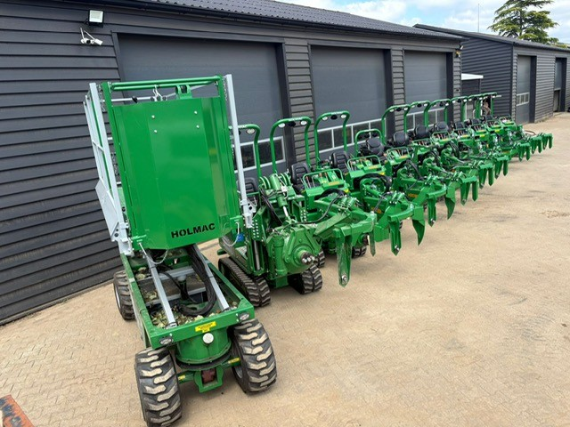
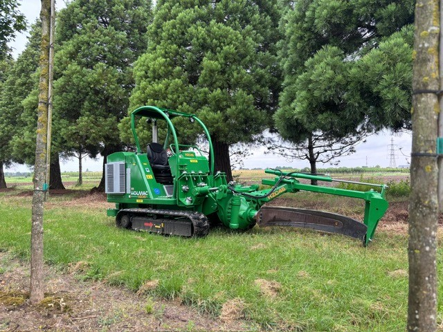
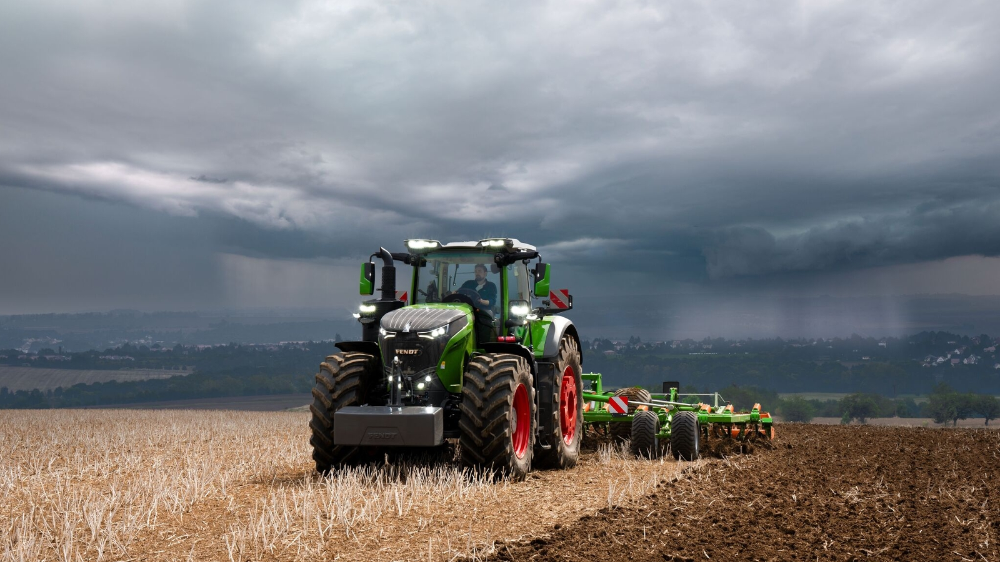

Persoonlijk
U heeft rechtstreeks contact met iemand die uw vraag technisch kan beoordelen en meedenkt over de oplossing.
Nuchter, technisch en dichtbij
Persoonlijk contact en een oplossing die aansluit op de dagelijkse praktijk.
Over G. van de Kolk
G. van de Kolk B.V. is een familiebedrijf in Kesteren, direct naast het laanboomcentrum van Opheusden. Dat persoonlijke karakter merkt u in korte lijnen, betrokken contact en een vast aanspreekpunt.
Onze kracht ligt in boomkwekerijmachines, reparatie, service en onderhoud. We kennen de dagelijkse praktijk en denken technisch mee over een oplossing die past bij de machine én het werk waarvoor u die gebruikt.
Vanuit die basis ondersteunen we professionals in boomkwekerij, landbouw, tuin en park — nuchter, zorgvuldig en zonder onnodige schakels.


Waar we voor staan
Geen grote woorden, maar duidelijke afspraken en technisch werk waar u mee verder kunt.
U heeft rechtstreeks contact met iemand die uw vraag technisch kan beoordelen en meedenkt over de oplossing.
De toepassing staat centraal. Een oplossing moet betrouwbaar zijn en passen bij hoe u dagelijks werkt.
Zorgvuldig uitgevoerd onderhoud, reparatie en constructiewerk met aandacht voor veiligheid en inzetbaarheid.

Midden in de regio
De ligging tussen Kesteren en Opheusden betekent korte lijnen met boomkwekers en directe kennis van kluitenrooien, intern transport, grondbewerking en seizoensdrukte.
Die regionale specialisatie combineren we met brede technische ervaring aan trekkers, werktuigen en compact materieel.
Wat u kunt verwachten
Bij een eerste contact bespreken we om welke machine en toepassing het gaat. Daarna maken we duidelijk welke informatie nodig is en wat een logische vervolgstap is.
Kennismaken
Met een korte omschrijving, merk en type van de machine kunnen we u meestal sneller helpen.